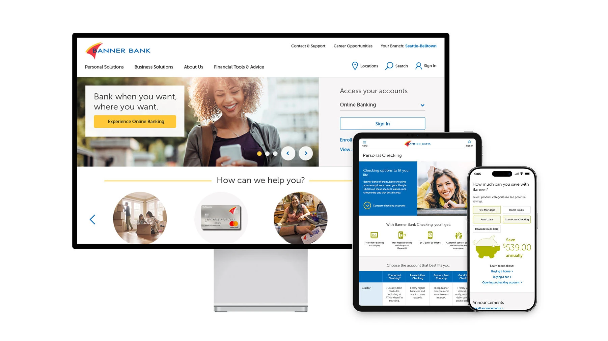
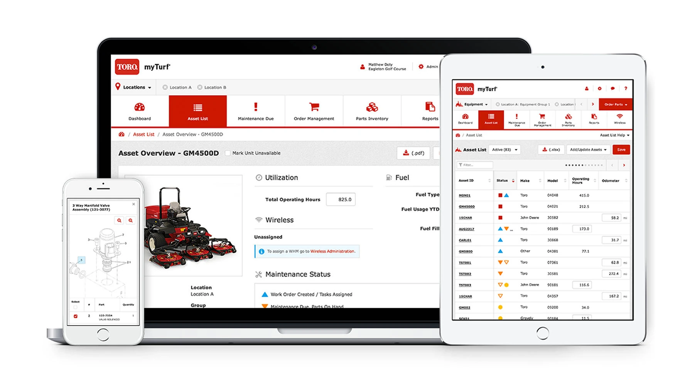
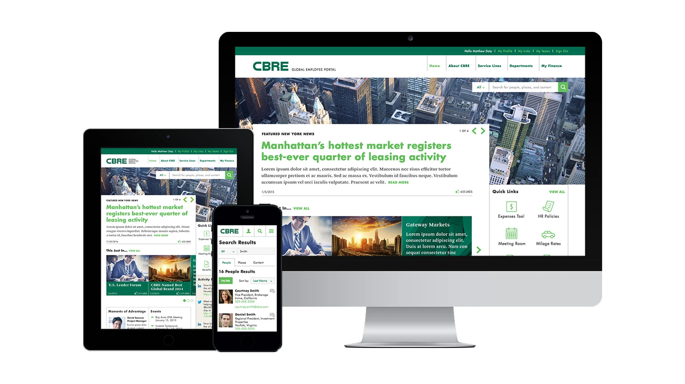
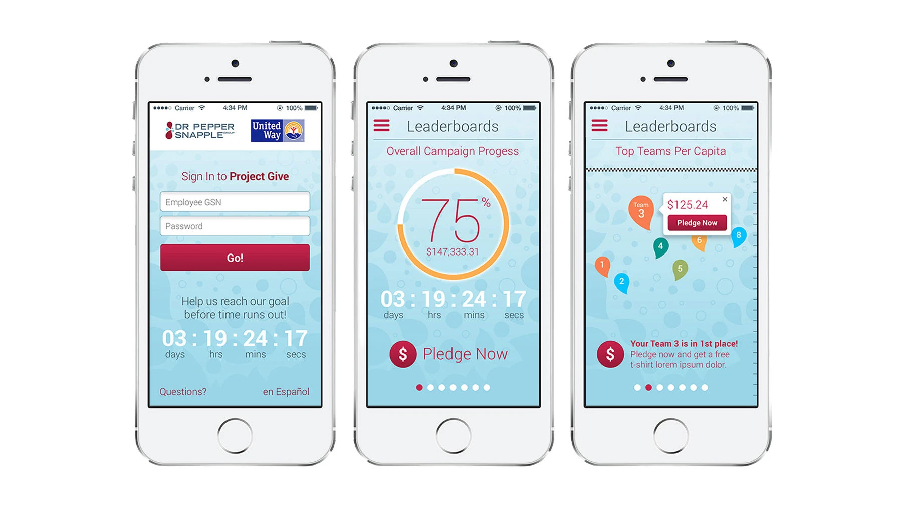
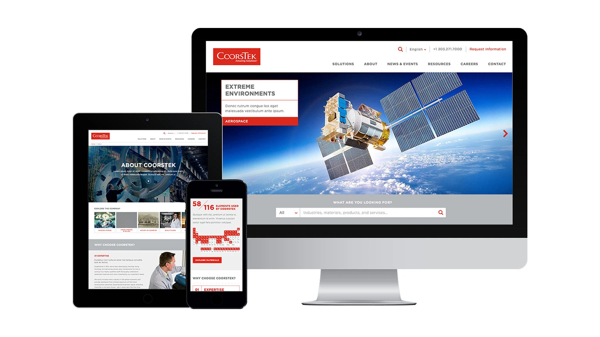
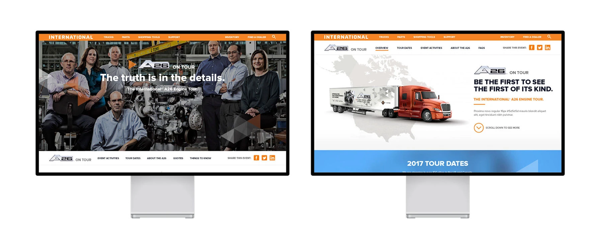
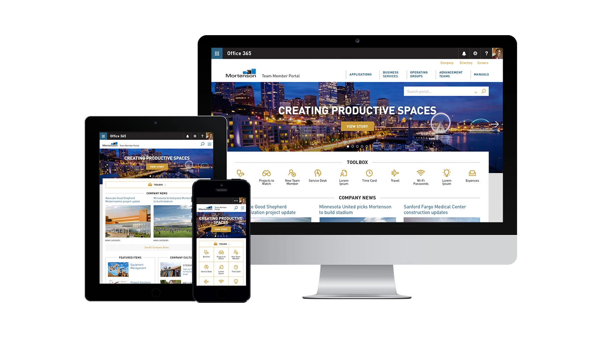

Career · 3 min read
13 years designing enterprise software (2013-2026)
- Employer
- RBA Consulting
- My role
- Lead UX product designer
- Timeline
- 2013-2026

Overview
For thirteen years at RBA I designed enterprise products, from a suite of 40+ SAP apps to a dispatch cockpit for a 450+ truck fleet.
My longest stretch went into building a UX practice inside one global company, and that practice kept working after I left.
Consulting is a high-wire act. You walk into a room where everyone speaks a different language. Marketing wants flash. IT wants security. The users just want to get their work done.
My job was to be the translator, and to show that good design is what makes things work. We had to make a real difference fast, without breaking what already worked.
Start with the three projects that have numbers: the SAP suite, the dispatch cockpit, and the USDA grant platform.
Project highlights
Banner Bank website

Building better banking
- Responsive redesign for a regional bank
- Simpler navigation so customers could find things
- Accessible financial tools and calculators
Toro myTurf equipment maintenance app

Field-ready performance
- Mobile-first maintenance tracking for field crews
- Real-time equipment status and alerts
- Still works out on the far end of the course, with no signal
CBRE global employee portal

Connecting the workforce
- Unified intranet for 140,000+ global employees
- Personalized dashboard based on role and location
- Connected to the HR and productivity tools people already used
Dr Pepper Snapple Group United Way fundraising app

Gamifying good
- A donation experience that felt more like a game
- Real-time fundraising progress tracking
- Sharing tools so donors could bring in more donors
CoorsTek website

Engineering scale
- Global corporate presence for advanced ceramics
- Product catalog with complex filtering
- Multi-language support for international markets
International Trucks website

Driving sales
- Configurator tool for custom truck builds
- Dealer locator with inventory integration
- A content strategy the team could keep up with
Mortenson Construction team member portal

Constructing safety
- Secure internal portal for construction teams
- Project document management and collaboration
- Safety reporting and compliance tools